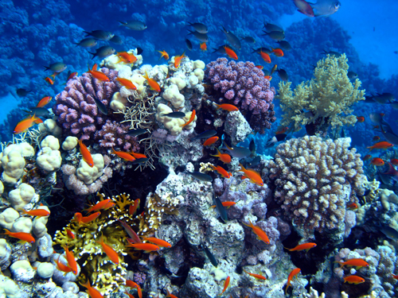
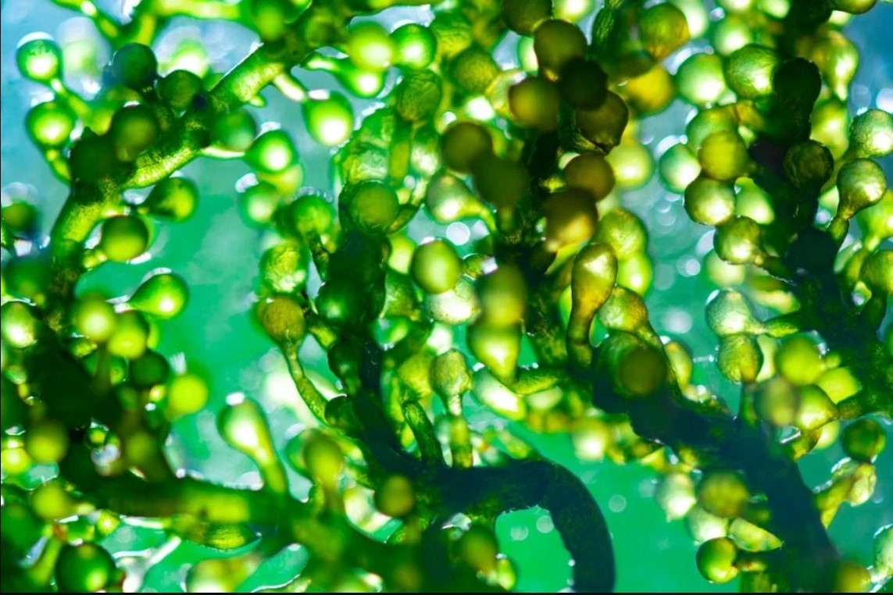
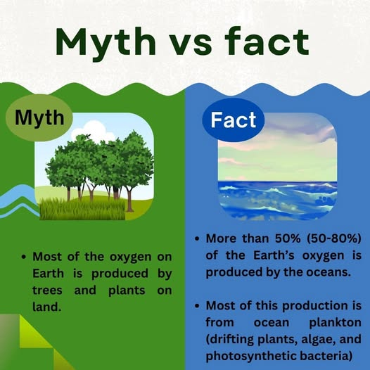

Why Marine Biodiversity Matters
Marine biodiversity is vital for the health of our planet. Oceans cover more than 70% of the Earth's surface and are home to millions of species, many yet to be discovered. Healthy marine ecosystems provide food, medicine, and livelihoods for billions of people.
Impact on Human Health
Marine biodiversity plays a crucial role in human health. Oceans produce over half of the world's oxygen and absorb significant amounts of carbon dioxide, helping to mitigate climate change. Additionally, many marine species are sources of new medicines and treatments.
Fun Fact: Photosynthesizing algae in the ocean produce around 70% of the world's oxygen.
